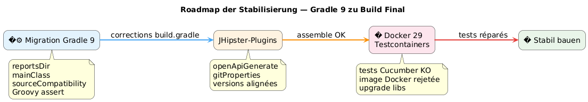

Wenn Gradle 9, Docker 29 und Testcontainers sich die Milz im Sud kochen: Debugging eines JHipster-Builds
Publié le 25 April 2026
- Die Szene: ein JHipster-Projekt, ein Build, der nicht mehr lädt.
- Fehler 1: die Phantomvariable `reportsDir
- Fehler 2:
main = "…"existiert nicht mehr unter Gradle 9 - Fehler 3 :
sourceCompatibilityist keine Projekt-Eigenschaft mehr - Fehler 4: die dreifach operanten Groovy-Assertion
- Fehler 5 : die implizite Abhängigkeit
compileKotlin→ `openApiGenerate - Fehler 6 :
generateGitPropertiesbricht bei `FilterOutputStream.write() - Endlich: Testcontainers betritt die Bühne
- Phase 1: die Spur docker-java
- Phase 2: Websuche und GitHub-Brotkrümelnavigation
- Phase 3 : die Falle der umbenannten Artifacts
- Phase 4: die Auflösung erzwingen
- Endergebnis
- Übersichtstabelle der Korrekturen
- Fazit
Du hast diesen Moment bereits erlebt, in dem ein einfaches`./gradlew build`das Sie hundertmal am Tag starten, stürzt plötzlich bei einem bisher nicht gesehenen Fehler ab? Multiplizieren Sie das mit elf aufeinanderfolgenden Fehlern, fügen Sie eine gute Portion Inkompatibilität bei Docker Engine 29 hinzu, streuen Sie Gradle 9 darüber, das APIs, die wir seit zehn Jahren benutzt haben, verschwinden lässt. Hier ist das vollständige Logbuch.
Ziel: die Serie der Unverträglichkeiten zeigen.
Failed to generate image: PlantUML preprocessing failed: [From <input> (line 4) ] @startuml left to right direction title Gradle-9-Migration rectangle "1 ^^^^^ Syntax Error? (Assumed diagram type: class) @startuml left to right direction title Gradle-9-Migration rectangle "1 reportsDir" as A rectangle "2 mainClass" as B rectangle "3\nsourceCompatibility" as C rectangle "4\nGroovy assert" as D A --> B B --> C C --> D @enduml
Ziel: die defekten Plugins isolieren.
Failed to generate image: PlantUML preprocessing failed: [From <input> (line 7) ] @startuml left to right direction title Plugins zu korrigieren skinparam shadowing false skinparam roundcorner 18 rectangle "1 ^^^^^ Syntax Error? (Assumed diagram type: class) @startuml left to right direction title Plugins zu korrigieren skinparam shadowing false skinparam roundcorner 18 rectangle "1 openApiGenerate" as A #FFF3E0 rectangle "2\ngitProperties\n2.5.7" as B #FFF3E0 rectangle "3 Korrigierte Versionen" as C #E3F2FD rectangle "4 Zusammenbau OK" as D #E8F5E9 A --> B B --> C C --> D @enduml
Ziel: Laufzeitproblem.
Failed to generate image: PlantUML preprocessing failed: [From <input> (line 11) ] @startuml left to right direction title Docker 29 + Testcontainers skinparam shadowing false skinparam roundcorner 18 skinparam defaultFontSize 14 rectangle "Zusammenbauen OK" as A #E8F5E9 rectangle "2\nTests Cucumber FAIL" as B #FFEBEE rectangle "3 ^^^^^ Syntax Error? (Assumed diagram type: component) @startuml left to right direction title Docker 29 + Testcontainers skinparam shadowing false skinparam roundcorner 18 skinparam defaultFontSize 14 rectangle "Zusammenbauen OK" as A #E8F5E9 rectangle "2\nTests Cucumber FAIL" as B #FFEBEE rectangle "3 Testcontainers 1.32 abgelehnt" as C #FFF3E0 rectangle "4 Upgrade Versionen" as D #E3F2FD rectangle "5\nFinale OK erstellen" as E #E8F5E9 A --> B B --> C C --> D D --> E @enduml

Die Szene: ein JHipster-Projekt, ein Build, der nicht mehr lädt.
Das Projekt`edster`ist eine JHipster-Anwendung, die 2024 generiert wurde. Das Wurzel-Build-Skript`build.gradle`blieb monatelang stabil. Dann beschließt man, auf die nächste Version zu aktualisieren:
Komponente |
Zielversion |
Gradle |
9.4.1 |
Java |
21.0.11-tem (Eclipse Temurin) |
JHipster |
8.x (Framework`tech.jhipster:jhipster-framework:8.11.0`) |
Spring Boot |
3.4.5 |
Kotlin |
2.3.0 |
Docker Engine |
29.4.1 (API 1.54) |
Der Wechsel der Java-Version erfolgt über SDKMAN:
sdk use java 21.0.11-temErster Start :
$ ./gradlew build --no-daemon
FAILURE: Build failed with an exception.
* Where:
Build file '/home/.../edster/build.gradle' line: 18
* What went wrong:
An exception occurred applying plugin request [id: 'jhipster.cucumber-conventions']
> Failed to apply plugin 'jhipster.cucumber-conventions'.
> Could not create task ':cucumberTest'.
> Could not create task ':consoleLauncherTest'.
> Could not set unknown property 'reportsDir' for task ':consoleLauncherTest'Wir kommen nicht einmal beim Laden des Build-Skripts weiter. Das Problem liegt in`buildSrc/src/main/groovy/jhipster.cucumber-conventions.gradle`.
Fehler 1: die Phantomvariable `reportsDir
Das Script`jhipster.cucumber-conventions.gradle`enthält :
tasks.register('consoleLauncherTest', JavaExec) {
dependsOn(testClasses)
String cucumberReportsDir = file("$buildDir/reports/tests")
outputs.dir(reportsDir) // <-- reportsDir n'existe PAS
classpath = sourceSets["test"].runtimeClasspath
main = "org.junit.platform.console.ConsoleLauncher"
// ...
}Die definierte Variable ist`cucumberReportsDir`. Die verwendet ist`reportsDir`-- nirgendwo definiert.
Korrektur : outputs.dir(cucumberReportsDir)
Fehler 2: main = "…" existiert nicht mehr unter Gradle 9
Unverzögerte Nachverfolgung:
Could not set unknown property 'main' for task ':consoleLauncherTest' of type org.gradle.api.tasks.JavaExec.Gradle 9 entfernt die Eigenschaft`main`zu Gunsten von`mainClass`über die Aufgaben`JavaExec`.
Korrektur : mainClass = "org.junit.platform.console.ConsoleLauncher"
Fehler 3 : sourceCompatibility ist keine Projekt-Eigenschaft mehr
Neuer Fehler:
Could not set unknown property 'sourceCompatibility' for root project 'edster' of type org.gradle.api.Project.Das Root-Skript hatte :
sourceCompatibility=17
targetCompatibility=17Gradle 9 entfernt diese Eigenschaften auf Stammebene. Sie müssen in einem Block leben.java.
Korrektur:
java {
sourceCompatibility = JavaVersion.VERSION_21
targetCompatibility = JavaVersion.VERSION_21
}Fehler 4: die dreifach operanten Groovy-Assertion
Das alte Skript enthielt:
assert System.properties["java.specification.version"] == "17" || "21" || "24"In Groovy,"21" et "24"`sind truthy strings. Der Ausdruck ergibt(… == "17") || true || true`, was immer wahr ist — aber die Syntax ist ungültig für die gewünschte strenge Assertion.
Korrektur :
assert System.properties["java.specification.version"] in ["17", "21", "23", "24"]Fehler 5 : die implizite Abhängigkeit compileKotlin → `openApiGenerate
Der Build schreitet voran. Die Kotlin-Kompilierung war erfolgreich. Dann :
Task ':compileKotlin' uses this output of task ':openApiGenerate'
without declaring an explicit or implicit dependency.Gradle 9 lehnt implizite Abhängigkeiten zwischen Tasks ab. Da`compileKotlin`liest die generierten Quellen von`openApiGenerate`, man muss den Link deklarieren.
Korrekturin`build.gradle`:
afterEvaluate {
tasks.named("compileKotlin").configure {
dependsOn(tasks.named("openApiGenerate"))
}
}Le `afterEvaluate`ist notwendig weil`openApiGenerate`ist eine Erweiterung (OpenAPI Generator-Plugin) und keine direkt zugängliche Aufgabe während der Konfigurationsphase.
Fehler 6 : generateGitProperties bricht bei `FilterOutputStream.write()
Die Java-Kompilation ist erfolgreich. Die Ressourcen werden verarbeitet. Dann :
> Task :generateGitProperties FAILED
No signature of method: java.io.FilterOutputStream.write() is applicable for argument types: (Integer) values: [103]Das Plugin`gradle-git-properties`Version 2.5.0 ist mit Java 21 / Gradle 9 inkompatibel. Ein interner Bug versucht, aufzurufen`write(int)`via Groovy auf einem Stream, der es geschlossen hat.
Korrekturin`gradle.properties`:
gitPropertiesPluginVersion=2.5.7Endlich: Testcontainers betritt die Bühne
Bislang war es rein "build script debugging". Jeder Fehler war eine Inkompatibilität von Gradle 9 oder Java 21 in den Build-Skripten. Nach den sechs oben genannten Korrekturen, der`./gradlew assemble`besteht erfolgreich.
Aber`./gradlew build`führt auch die Tests aus, und die Cucumber-Tests verwenden Testcontainers, um eine vorübergehende PostgreSQL-Instanz zu starten.
Could not find a valid Docker environment.
EnvironmentAndSystemPropertyClientProviderStrategy: failed with exception BadRequestException
(Status 400: {"message":"client version 1.32 is too old. Minimum supported API version is 1.40"}
UnixSocketClientProviderStrategy: failed with exception BadRequestException
(Status 400: {"message":"client version 1.32 is too old. Minimum supported API version is 1.40"}Testcontainers kann nicht mit Docker kommunizieren. Zwei unterschiedliche Strategien (Umgebungsvariablen + Unix-Socket) schlagen mit demselben Fehler fehl.
Failed to generate image: PlantUML preprocessing failed: [From <input> (line 5) ] @startuml skinparam backgroundColor #FEFEFE skinparam handwritten false actor "Testcontainers ^^^^^ Syntax Error? (Assumed diagram type: sequence) @startuml skinparam backgroundColor #FEFEFE skinparam handwritten false actor "Testcontainers 1.20.6" as TC participant "docker-java 3.4.1" as DJ participant "Docker Engine 29.4.1" as DE TC -> DJ : new DockerClient() DJ -> DE : GET /_ping\nUser-Agent: docker-java/3.4.1\nAPI-Version: 1.32 DE --> DJ : HTTP 400 Bad Request\nclient version 1.32 is too old.\nMinimum supported API version is 1.40 DJ --> TC : BadRequestException TC --> TC : Could not find a valid\nDocker environment note right of DE Docker Engine 29.x impose API minimum = 1.40 (défaut ancien : 1.24) end note note left of DJ docker-java 3.4.1 envoie hardcoded API version 1.32 dans l'en-tête HTTP end note @enduml
Phase 1: die Spur docker-java
Erster Reflex: Der von Testcontainers verwendete Java-Docker-Client sendet die API-Version`1.32`in seinem HTTP-Handshake, aber Docker Engine 29.4.1 erfordert ein Minimum von`1.40`. Das Problem liegt beim Client, nicht beim Daemon.
Überprüfung der von Testcontainers 1.20.6 gelösten docker-java-Version:
$ ./gradlew dependencies --configuration testRuntimeClasspath | grep docker-java
+--- com.github.docker-java:docker-java-api:3.4.1
+--- com.github.docker-java:docker-java-transport:3.4.1docker-java 3.4.1, datierend von Testcontainers 1.20.6. Die neueste öffentliche Version von docker-java ist 3.5.1. Lass uns versuchen, die Versionserhöhung zu erzwingen via`resolutionStrategy`im Block`configurations` de build.gradle:
configurations {
all {
resolutionStrategy.eachDependency { details ->
if (details.requested.group == "com.github.docker-java"
&& details.requested.name.startsWith("docker-java")) {
details.useVersion("3.5.1")
}
}
}
}Neustart des Builds. Derselbe Fehler:`client version 1.32 is too old`.
Überprüfung des Gradle-Caches: Die JARs wurden erfolgreich erneut heruntergeladen, aber der Fehler bleibt bestehen. docker-java 3.5.1 sendet weiterhin`1.32`. Diese Version ist daher NICHT ausreichend für Docker Engine 29.4.1.
Reinigungsaktion: den Gradle-Cache vollständig leeren, nur um sicher zu sein :
rm -rf ~/.gradle/caches
rm -rf /path/to/project/.gradleVollständiger Neustart nach der Bereinigung. Gleicher Fehler.
Phase 2: Websuche und GitHub-Brotkrümelnavigation
docker-java 3.5.1 ist unzureichend. Es bleibt nur noch, zu prüfen, ob jemand dieses genaue Problem bereits hatte.
Gezielte Suche nach den Issues testcontainers-java und docker-java :
site:github.com/testcontainers "client version 1.32 is too old"
site:github.com/docker-java "client version 1.32" Docker Engine 29Erste sofortige Ergebnisse:
-
testcontainers-java#11210—
[Bug]: client version 1.32 is too old. Minimum supported API version is 1.44 -
testcontainers-java#11212—
[Bug]: Docker 29.0.0 could not find a valid Docker environment -
testcontainers-java#11491—
[Bug]: Incompatibility in Ubuntu Github runners with Docker Engine 29.1.*
Der Ariadne-Faden ist klar: Docker Engine 29.x hat seine Mindest-API-Version von`1.24`(alter Fehler) zu`1.40`. Testcontainers 1.20.x verwendet docker-java 3.4.x, das die API-Version durch das Senden aushandelt`1.32`Der Daemon weigert sich höflich aber bestimmt.
In Issue #11491 antwortet ein Maintainer :
(I’ll output nothing) Hi, ich habe ein Projekt, das mit Version 2.0.3 auf einem GH runner mit Engine 29.1 läuft und funktioniert. Könnt ihr bitte prüfen, dass kein Versionskonflikt besteht? Bitte beachten Sie, dass alle Module waren mit`testcontainers-. Also, ab Version 2.x gingen wir von`postgresql to testcontainers-postgresql __
Diese Antwort enthältzwei kritische Informationen:
-
Testcontainers 2.0.3+ löst das Problem
-
Die Module wurdenmit dem Präfix
testcontainers-umbenannt
Phase 3 : die Falle der umbenannten Artifacts
Die Umbenennung ist brutal. Bei Testcontainers 2.x funktioniert keiner der alten Namen mehr unter diesem Namen:
Alter Name (1.x) |
Neuer Name (2.x) |
|
|
|
|
|
|
|
unverändert |
Erster Versuch: die Testcontainers-BOM 2.0.5 anwenden und die neuen Artefaktnamen in`build.gradle`.
dependencies {
testImplementation platform("org.testcontainers:testcontainers-bom:2.0.5")
testImplementation "org.testcontainers:testcontainers-postgresql"
testImplementation "org.testcontainers:testcontainers-jdbc"
testImplementation "org.testcontainers:testcontainers-junit-jupiter"
testImplementation "org.testcontainers:testcontainers"
}./gradlew build
FAILURE: Could not find org.testcontainers:jdbc:2.0.5.
Could not find org.testcontainers:junit-jupiter:2.0.5.Das BOM von testcontainers-bom reicht nicht aus.Warum? Weil Spring Boot 3.4.5 sein eigenes BOM zur Abhängigkeitsverwaltung offenlegt.spring-boot-dependencies) wergewinntauf dem Testcontainers-BOM in der transitiven Auflösung. Spring Boot behebt`testcontainers` à 1.20.6, und daher alle Artefakte die nicht explizit im Spring Boot BOM sind (wie die neuen`testcontainers-*) auflösen zu den alten Namen`1.20.6-- die nicht mehr in dieser Version existieren.
Beim Untersuchen des`dependencies --configuration testRuntimeClasspath`, findet man :
+--- org.testcontainers:testcontainers -> 1.20.6 (*)
| \--- org.testcontainers:testcontainers:2.0.5 -> 1.20.6Le →`zeigt die Ersetzung : Testcontainers 2.0.5 ist gefragt, aber Spring Boot erzwingt`1.20.6.
Failed to generate image: PlantUML preprocessing failed: [From <input> (line 21) ]
@startuml
skinparam backgroundColor #FEFEFE
skinparam handwritten false
skinparam componentStyle rectangle
left to right direction
component "build.gradle\n(Verbraucher)" as BG #E3F2FD {
rectangle "Anfrage\n`testcontainers-bom:2.0.5" as REQ
rectangle "Anfrage\n`testcontainers-postgresql" as REQ2
}
component "Maven Central" as MC #FFF3E0
component "Erklärungen" as DEC #E8F5E9 {
rectangle "testcontainers-bom:2.0.5`\nbehebt 2.0.5" as BOM2
rectangle "spring-boot-dependencies:3.4.5`\nsetzt 1.20.6" as BOM1
}
component "Gradle-Auflösung" as RES #FFEBEE {
rectangle "Gewinnende Version
^^^^^
Syntax Error? (Assumed diagram type: component)
@startuml
skinparam backgroundColor #FEFEFE
skinparam handwritten false
skinparam componentStyle rectangle
left to right direction
component "build.gradle\n(Verbraucher)" as BG #E3F2FD {
rectangle "Anfrage\n`testcontainers-bom:2.0.5" as REQ
rectangle "Anfrage\n`testcontainers-postgresql" as REQ2
}
component "Maven Central" as MC #FFF3E0
component "Erklärungen" as DEC #E8F5E9 {
rectangle "testcontainers-bom:2.0.5`\nbehebt 2.0.5" as BOM2
rectangle "spring-boot-dependencies:3.4.5`\nsetzt 1.20.6" as BOM1
}
component "Gradle-Auflösung" as RES #FFEBEE {
rectangle "Gewinnende Version
`testcontainers:1.20.6" as WIN #EF9A9A
}
BG --> DEC : "analysiere die BOMs"
BOM2 --> RES : "schlägt vor"
BOM1 --> RES : "schlägt 1.20.6 vor"
WIN -> MC : "Lade\ntestcontainers:1.20.6"
note bottom of WIN
Spring Boot BOM prime car
le plugin spring-boot applique
ses dépendances de gestion
après la résolution du consommateur
end note
@enduml
Phase 4: die Auflösung erzwingen
Die Strategie wird doppelt:
-
Erzwinge docker-java auf die Version 3.7.1 (getestet als kompatibel mit Docker Engine 29)
-
Erzwinge Testcontainers core auf 2.0.5, indem du das Spring Boot BOM umgehst
Failed to generate image: PlantUML preprocessing failed: [From <input> (line 14) ]
@startuml
skinparam backgroundColor #FEFEFE
skinparam handwritten false
skinparam componentStyle rectangle
left to right direction
component "build.gradle\n(mit resolutionStrategy)" as BG #E8F5E9 {
rectangle "BOM Testcontainers\n`2.0.5" as BOM2
rectangle "resolutionStrategy\n.eachDependency" as RS #66BB6A
}
component "Konflikt gelöst" as RESOLVED #E3F2FD {
rectangle "docker-java
^^^^^
Syntax Error? (Assumed diagram type: component)
@startuml
skinparam backgroundColor #FEFEFE
skinparam handwritten false
skinparam componentStyle rectangle
left to right direction
component "build.gradle\n(mit resolutionStrategy)" as BG #E8F5E9 {
rectangle "BOM Testcontainers\n`2.0.5" as BOM2
rectangle "resolutionStrategy\n.eachDependency" as RS #66BB6A
}
component "Konflikt gelöst" as RESOLVED #E3F2FD {
rectangle "docker-java
`3.7.1` (erzwungen)" as DJ
rectangle "testcontainers
`2.0.5` (erzwungen)" as TC #81C784
rectangle "testcontainers-postgresql\n`2.0.5" as TPG
rectangle "testcontainers-jdbc\n`2.0.5" as TJ
rectangle "testcontainers-junit-jupiter
`2.0.5" as TJJ
}
component "BOM Spring Boot
(implizit, überschrieben)" as BOM1 #FFEBEE
component "Maven Central" as MC #FFF3E0
BG --> RESOLVED : "BOM Testcontainers 2.0.5\nwird direkt übergeben"
RS -> DJ : "Kraft 3.7.1"
RS -> TC : "Kraft 2.0.5"
RESOLVED --> MC : "Lade die JARs
kompatible Docker 29"
BOM1 -[#gray,dashed]-> RESOLVED : "ignoriert auf testcontainers\nund docker-java"
note bottom of RS
Le `eachDependency` intercepte
la résolution Gradle AVANT
que le BOM Spring Boot ne gagne.
C'est une intervention chirurgicale.
end note
@enduml
Endkorrekturin`build.gradle`:
configurations {
all {
resolutionStrategy.eachDependency { details ->
if (details.requested.group == "com.github.docker-java"
&& details.requested.name.startsWith("docker-java")) {
details.useVersion("3.7.1")
}
if (details.requested.group == "org.testcontainers"
&& details.requested.name == "testcontainers") {
details.useVersion("2.0.5")
}
}
}
}
dependencies {
testImplementation platform("org.testcontainers:testcontainers-bom:2.0.5")
testImplementation "org.testcontainers:testcontainers-jdbc"
testImplementation "org.testcontainers:testcontainers-junit-jupiter"
testImplementation "org.testcontainers:testcontainers-postgresql"
testImplementation "org.testcontainers:testcontainers"
// ... autres dépendances Spring Boot
}Le `resolutionStrategy.eachDependency`ist der einzige Weg, das BOM zu umgehen`spring-boot-dependencies`verwaltet durch das Spring Boot Plugin. Der Gleichheitstest auf`details.requested.name == "testcontainers"`ist bewusst beschränkt: man erzwingt nur das Kernmodul. Die Module`testcontainers-*`Sie folgen dem BOM von Testcontainers 2.0.5, den wir explizit deklariert haben.
Endergebnis
$ ./gradlew build --no-daemon
> Task :consoleLauncherTest
[2 containers found]
[2 containers started]
[2 containers successful]
BUILD SUCCESSFUL in 1m 16sTestcontainers 2.0.5 + docker-java 3.7.1 können endlich ihre PostgreSQL-Container über Docker Engine 29.4.1 erstellen. Der letzte fachliche Fehler (HTTP 500 beim Cucumber-Test) ist ein ausschließlich applikatives Problem, das völlig unabhängig vom Build-Skript ist.
Übersichtstabelle der Korrekturen
| # | Datei | Problem | Korrektur |
|---|---|---|---|
1 |
|
Variable`reportsDir`nicht existent |
|
2 |
|
`main`veraltetes Gradle 9 |
|
3 |
|
`sourceCompatibility`top-level verboten Gradle 9 |
Block`java { sourceCompatibility = JavaVersion.VERSION_21 }` |
4 |
|
Assertion Groovy syntaktisch ungültig |
|
5 |
|
Implizite Abhängigkeit`compileKotlin` → |
|
6 |
|
`gitPropertiesPluginVersion`inkompatibles Java 21 |
|
7 |
Gradle-Cache |
docker-java 3.5.1 getestet, gelöst aber unzureichend |
Löschung + Durchgang docker-java 3.7.1 |
8 |
|
Testcontainers 1.20.6 inkompatibel mit Docker‑Engine 29 |
Erzwinge Testcontainers 2.0.5 + Präfix`testcontainers-*`+ resolutionStrategy vs Spring Boot BOM |
Fazit
Wenn dein JHipster/Gradle-Build nach einem Upgrade auf Gradle 9 + Docker Engine 29 abstürzt, lassen sich die Fehler in zwei Kategorien einteilen:
Fehler des Build-Skripts(die ersten 6) : Gradle 9 entfernt Eigenschaften und Syntax, die jahrelang funktioniert haben.sourceCompatibility=, main =, reportsDir). Das sind mechanische Migrationen, sobald man die neue API kennt.
Docker-Laufzeitfehler(die letzten 2) : Docker Engine 29.4.1 schließt API-Clients < 1.40 aus. Testcontainers 1.20.6 (vorgegeben durch Spring Boot 3.4.5) verwendet docker-java 3.4.1, das 1.32 sendet. Nur Testcontainers 2.0.5 + docker-java 3.7.1 löst das Problem, indem es die Artefakte umbenennt und die Version erzwingt via`resolutionStrategy.eachDependency`als einzige Möglichkeit, den implizienten BOM von Spring Boot zu umgehen
Der Gradle-Build-Skript im Wurzelverzeichnis des Projekts ist jetzt sauber.`./gradlew build`läuft auf Java 21, Gradle 9.4.1, Spring Boot 3.4.5 und Docker Engine 29.4.1.